Design preview
Static mockups for the app. Click any card to open it full size. Newest work is near the top.
appBackgroundappSurfaceappPrimaryTextappAccentappDangerappSuccess
Current designs
The latest round. These are the targets for the app build.
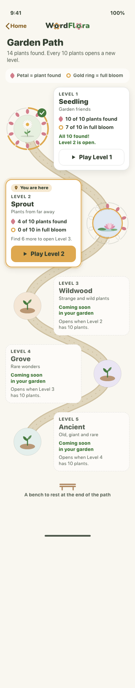
Level map: Garden Path new5 levels, petals for plants found, gold ring for full bloom
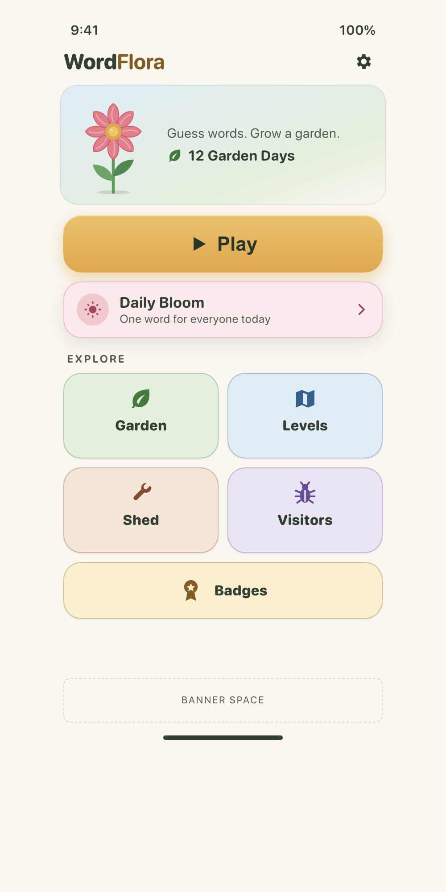
Home v2?state=unlocked|early|large
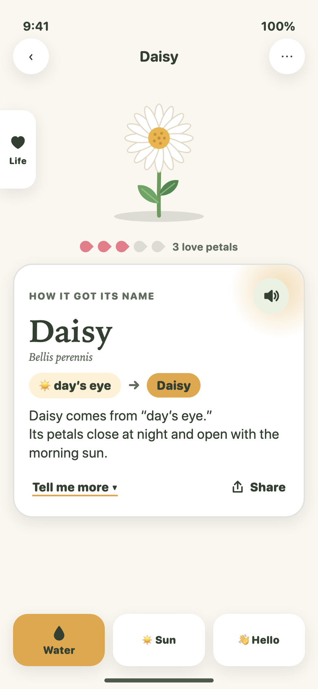
Fact card (plant detail)Name story, did you know
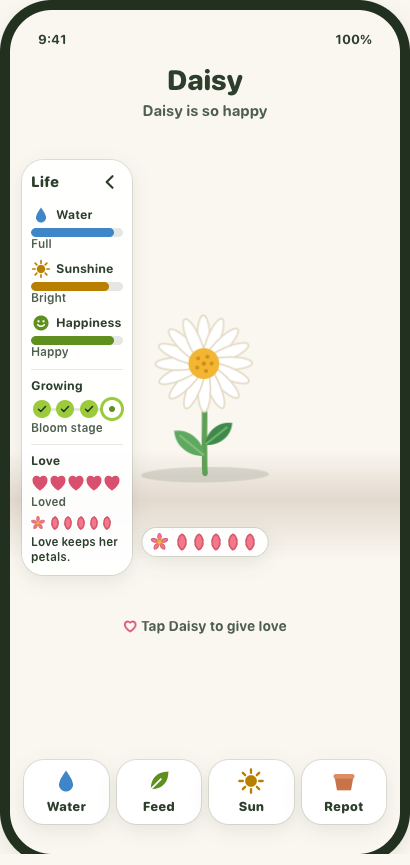
TendingPlant care screen
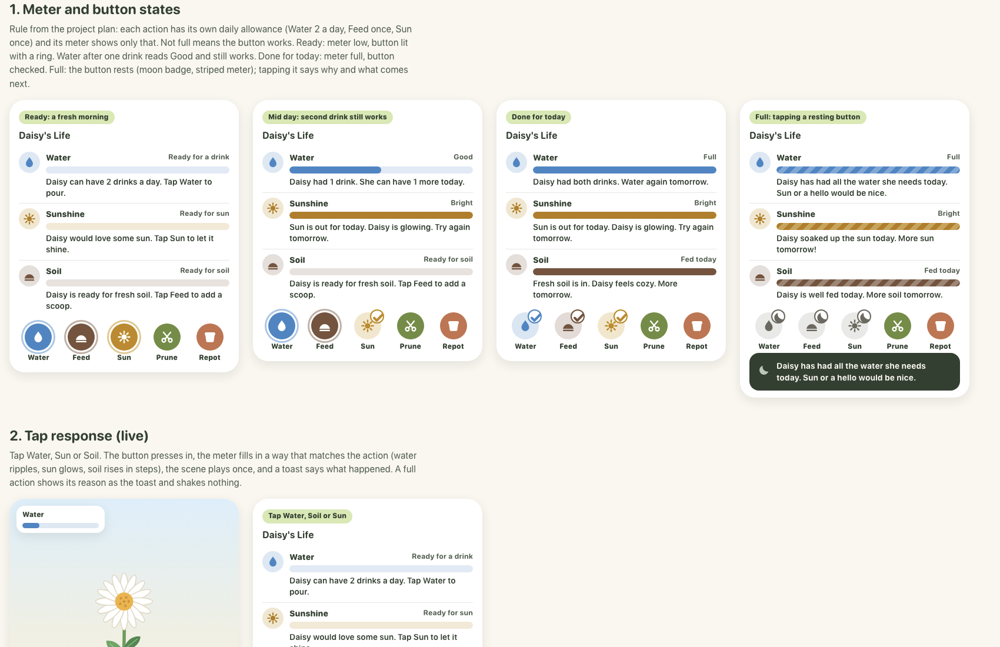
Tending: actionsWater, sun, soil, repot
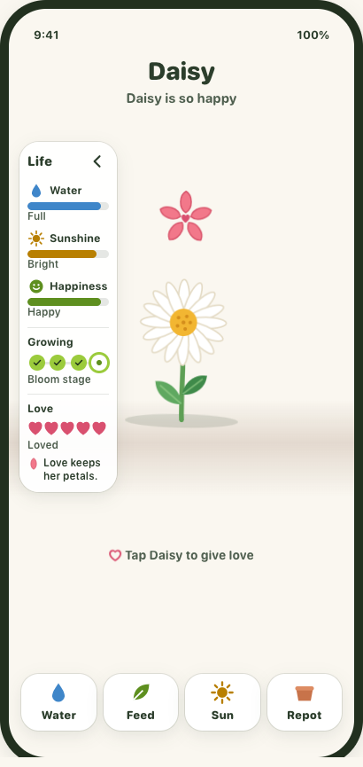
Tending: life stats
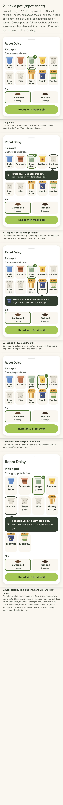
PotsPot picker, Shed, stage
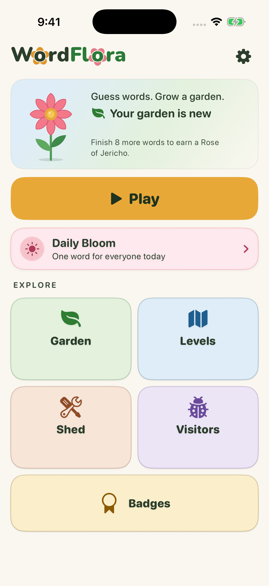
App vs mockups (QA shots)Current build screenshots
Logo & icon
The final wordmark is "B uncut": flower o's in Word and Flora.
Wordmark: finalTwin, solo, dark, mono

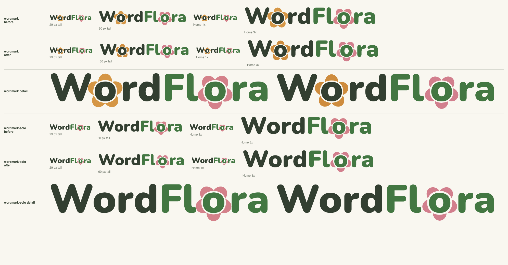
Wordmark: compare sheetLight · also dark and mono in compare/
App iconLight, dark, tinted
Logo directions A, B, CGallery and critic notes
Tending parts
Building blocks used by the tending screen.
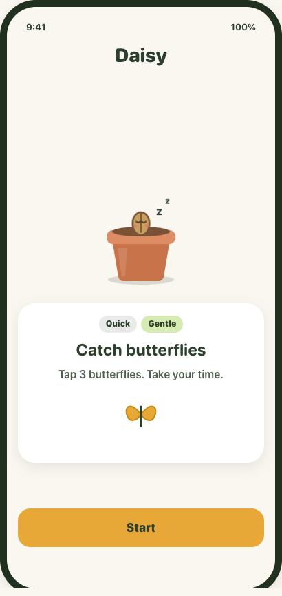
Wake options
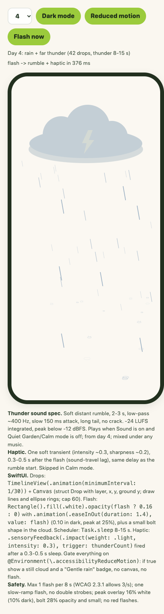
Weather
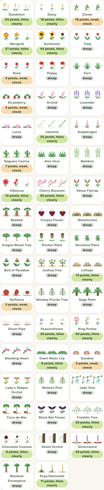
ThinningPetals fall and regrow
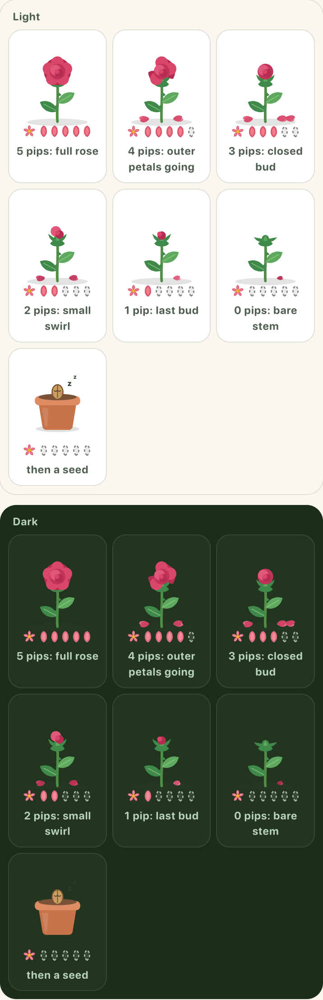
Rose thinning
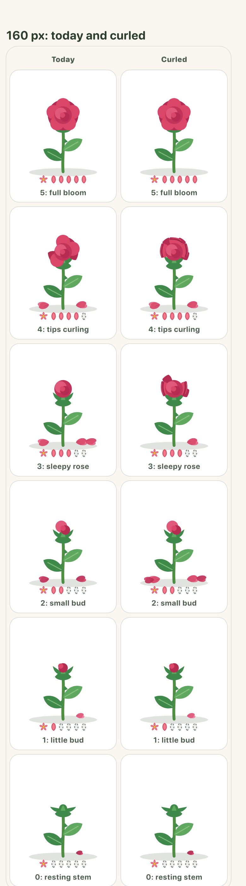
Rose curl
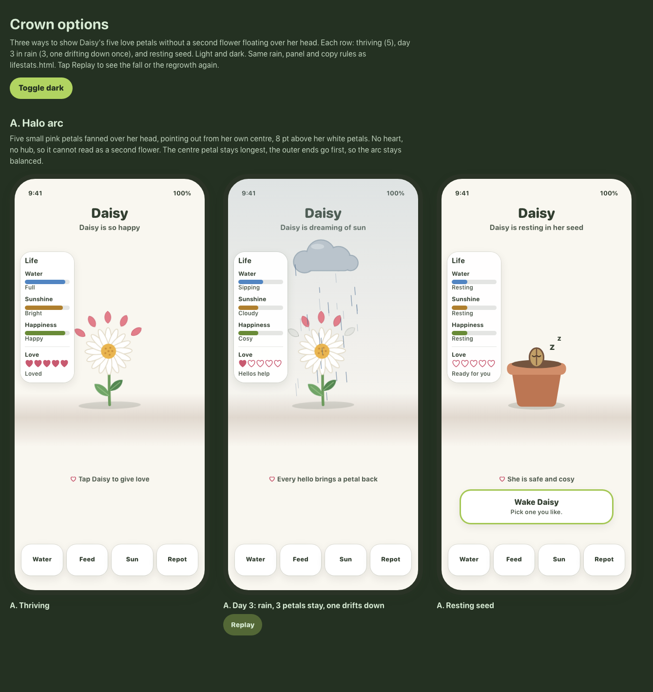
Crown options
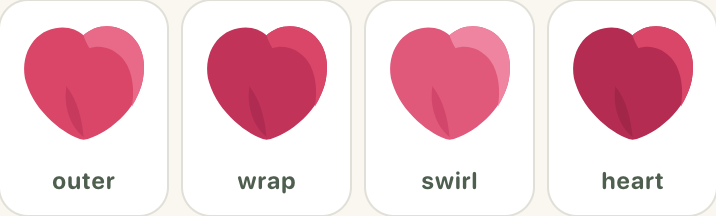
Flower sprite
Celebrate in progress
Intro and confetti work. Another designer owns this; links may change.
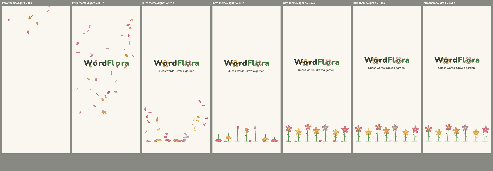
Intro
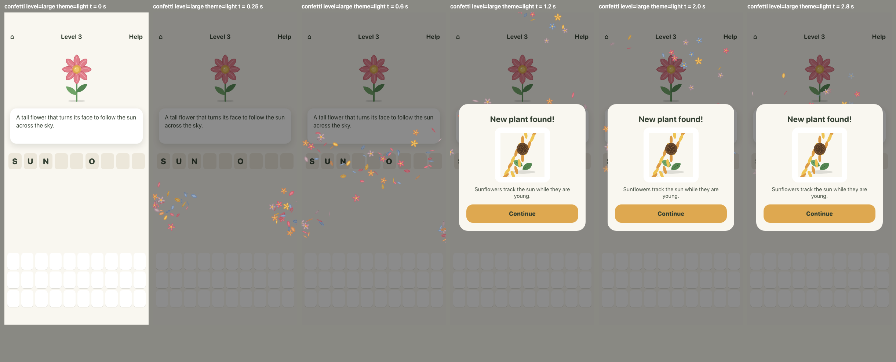
Confetti?level=small|medium|large|badge
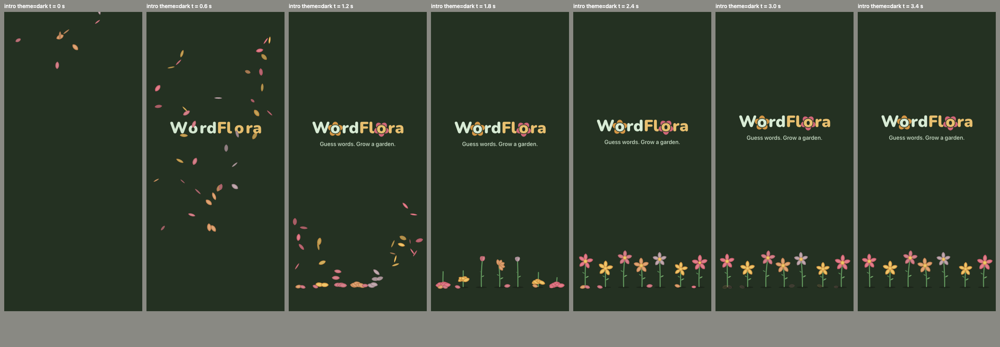
Frame strip viewer
First-round screens
The first overhaul pass. Kept for history; the current designs above replace them.
HomeGame: playingGame: round overLevel map (old)Replaced by Garden PathGardenPlant earned
Share card
Brand & earlier rounds
Clickable prototype (whole app)Brand: icon, intro, subscriptionsRound 4: tools, visitors, badgesRound 4: toolsRound 4: visitorsRound 4: badgesIntro: flower rainPlus, ads & age mockupsFlower states + motion demoPlant gallery + Rose of Jericho